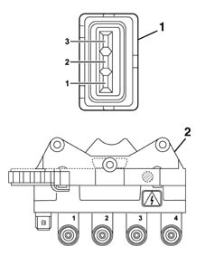

5510OC IGNITION COIL RESISTANCE CHECK
- Path
- Test > 55 ELECTRICAL EQUIPMENT > 5510 ENGINE IGNITION > 5510OC IGNITION COIL RESISTANCE CHECK
- Kind
- test / check procedure
- Applies to
- engines: 1.6 16v; all production periods; only with equipment: BIPOWER
- Interactive page
- https://sloeber94.github.io/elrnDB-fMltpl/en/#/186003510
Applies to: engines: 1.6 16v; all production periods; only with equipment: BIPOWER
- Check that the resistance of the coil primary circuit (measured between pins 1-2 and 2-3) is 510 mOhm at 20 °C.
- Check that the resistance of the coil secondary circuit (measured between pins 1-2 and 3-4) is 8.2 and 10 kOhm at 20 °C.
